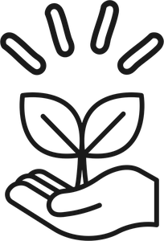
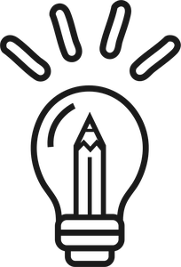

L’atelier couture
Retouches, réparations textile et machines à coudre partagées pour faire durer vos vêtements.

Une coopérative lilloise qui réunit un atelier de couture et une boutique de créateurs locaux.
Découvrir la coopérative
Retouches, réparations textile et machines à coudre partagées pour donner une seconde vie à vos vêtements.
Prendre rendez-vous

Des pièces uniques fabriquées par des artisans et créateurs de la région lilloise.
Visiter la boutique

De l’ourlet à la création de vêtements, on apprend ensemble, à son rythme.
Voir les tarifs
Un lieu unique à Lille pour réparer ses vêtements, apprendre à coudre et soutenir la création locale.
La Traction est une coopérative de l’économie sociale et solidaire. Elle réunit un atelier de couture et de réparation textile, et une boutique où exposent des créateurs et des artisans de la région.

De l’ourlet à la reprise invisible, jusqu’à la création de vêtements dans des tissus de récupération, nos ateliers de couture s’adressent à tous les niveaux. Marchés de créateurs et cafés couture rassemblent aussi notre communauté.
Retouches, réparations textile et machines à coudre partagées pour faire durer vos vêtements.
Apprenez à réparer, retoucher et créer vos vêtements, du premier point à la pièce finie.
Des pièces uniques fabriquées par des artisans et des créateurs de la région lilloise.